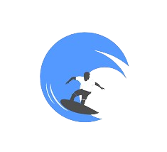

<!DOCTYPE html>
<html lang="en"></html>

<head>
  <meta charset="UTF-8">
  <meta name="viewport" content="width=device-width, initial-scale=1.0">

  <!-- google fonts -->
  <link rel="preconnect" href="https://fonts.googleapis.com">
    <link rel="preconnect" href="https://fonts.gstatic.com" crossorigin>
    <link href="https://fonts.googleapis.com/css2?family=Montserrat:ital,wght@0,100..900;1,100..900&display=swap" rel="stylesheet">

    <!-- bootstrap -->
  <link href="https://cdn.jsdelivr.net/npm/bootstrap@5.3.3/dist/css/bootstrap.min.css" rel="stylesheet" integrity="sha384-QWTKZyjpPEjISv5WaRU9OFeRpok6YctnYmDr5pNlyT2bRjXh0JMhjY6hW+ALEwIH" crossorigin="anonymous">

  <!-- feather icons -->
  <script src="https://unpkg.com/feather-icons"></script>

  <!-- title -->
  <title>PANTAI LAMPUNG</title>

  <!-- css -->
  <link rel="stylesheet" href="style.css">
</head> 

<body>
    <!-- navbar dan header -->
    <section class="header" id="header">
        <nav class="box1">
            <div class="navibar">
                
                <tittle class="judul">Pantai Lampung </tittle>
                    
                <ul class="navimenu">
                    <li class="menu"><a href="#header">Beranda</a></li>
                    <li class="menu-g"><a href="#content1">Wisata</a></li>
                    <li class="menu"><a href="#content2">News</a></li>
                </ul>
            </div>
        </nav>

        <div class="poster">
            <div id="carouselExampleAutoplaying" class="carousel slide" data-bs-ride="carousel">
                <div class="carousel-inner">
                  <div class="carousel-item active">
                    
                  </div>
                  <div class="carousel-item">
                    
                  </div>
                  <div class="carousel-item">
                    
                  </div>
                </div>
                <button class="carousel-control-prev" type="button" data-bs-target="#carouselExampleAutoplaying" data-bs-slide="prev">
                  <span class="carousel-control-prev-icon" aria-hidden="true"></span>
                  <span class="visually-hidden">Previous</span>
                </button>
                <button class="carousel-control-next" type="button" data-bs-target="#carouselExampleAutoplaying" data-bs-slide="next">
                  <span class="carousel-control-next-icon" aria-hidden="true"></span>
                  <span class="visually-hidden">Next</span>
                </button>
              </div>
        </div>
    </section>

    <!-- wisata -->
    <section class="content1" id="content1">
        <div class="row">
            <h1>WISATA PANTAI DI LAMPUNG</h1>
            <h2>Pantai Krui</h2>
            <div class="wisata1">
                <div class="img1">
                    
                </div>

                <div class="desc1">
                    <p>Pantai Jukung di Krui, yang terletak di pesisir barat Sumatera, adalah destinasi yang sangat terkenal 
                        bagi para peselancar dan wisatawan yang mencari pengalaman surfing yang menantang. Dengan pemandangan 
                        pasir putih yang luas dan pohon kelapa yang menjulang tinggi, pantai ini menawarkan panorama alam yang 
                        menakjubkan. Gelombangnya yang konsisten dan ideal menjadikannya tempat yang sangat dicari oleh 
                        peselancar dari seluruh dunia, dan bahkan menjadi tuan rumah kompetisi surfing internasional setiap 
                        tahun. Selain itu, pengunjung juga dapat menikmati keindahan bawah laut dengan snorkeling di sekitar 
                        terumbu karang yang indah. Jangan lewatkan kesempatan untuk menikmati matahari terbenam yang 
                        spektakuler di Pantai Jukung, tempat yang sempurna untuk mencari petualangan dan ketenangan di tepi 
                        Samudera Hindia.</p>
                </div>
            </div>

            <h2>Pantai Mutun</h2>
            <div class="wisata1">
                <div class="img1">
                    
                </div>

                <div class="desc1">
                    <p>Pantai Mutun di Lampung adalah destinasi pantai yang menakjubkan dengan pasir putih yang lembut dan air 
                        laut yang jernih. Terletak di sebelah selatan Bandar Lampung, pantai ini menawarkan pemandangan alam 
                        yang indah dengan perbukitan hijau yang melingkupi sekitarnya. Pantai Mutun juga dikenal sebagai lokasi 
                        yang ideal untuk berenang dan bersantai di tepi pantai. Selain itu, pengunjung dapat menikmati kegiatan 
                        snorkeling untuk melihat keindahan bawah laut yang tersembunyi di sekitar terumbu karang. Pemandangan 
                        matahari terbenam di Pantai Mutun juga sangat memukau, menjadi momen yang sempurna untuk menutup hari 
                        dengan keindahan alam Lampung yang mempesona.</p>
                </div>
            </div>

            <h2>Pantai Sanggar</h2>
            <div class="wisata1">
                <div class="img1">
                    
                </div>

                <div class="desc1">
                    <p>Wisata pantai semakin populer di Provinsi Lampung, terutama di Kabupaten Lampung Selatan. 
                        Kegiatan piknik di pantai menarik minat dari berbagai kalangan, mulai dari orang tua, remaja, 
                        hingga anak-anak. Salah satu destinasi wisata pantai yang menonjol di Lampung Selatan adalah Pantai 
                        Sanggar di Kalianda, juga dikenal sebagai Sanggar Beach. Terletak di Desa Way Urang, Kecamatan Kalianda, 
                        pantai ini memikat pengunjung dengan keindahan alamnya yang menakjubkan, seperti pasir putih halus, air laut 
                        yang bening, dan hamparan pepohonan yang rindang. Pantai Sanggar merupakan tempat yang ideal untuk bersantai 
                        sambil menikmati keindahan alam Lampung Selatan yang memesona. Sanggar Beach terletak tidak jauh dari pusat kota Kalianda.
                        arak dari Jalan Lintas Sumatera (Masjid Agung Kalianda) hanya sekitar 2 kilometer saja. Bisa ditempuh dalam waktu 
                        sekitar 10 menit berkendara. Sedangkan dari Gerbang Tol Kalianda jauhnya sekitar 6 – 6,7 kilometer. Bisa ditempuh 
                        dalam waktu 15-20 menit berkendara. Akses jalan menuju pantai ini juga sangat mudah, baik dengan kendaraan roda dua
                        maupun roda empat. </p>
                </div>
            </div>
        </div>
    </section>

    <!-- News -->
    <section class="content2" id="content2">
        <div class="headernews">
            <h2>INFORMASI PANTAI</h2>
        </div>
        
        <div class="listnews">
            <div class="news">
                <div class="newsdesc">
                    <h3>PANTAI JUKUNG KRUI</h3>
                    <div class="img2">
                        
                    
                    <div class="narasi">
                        <p>Pantai Jukung di Krui, yang terletak di pesisir barat Sumatera. 
                            Informasi penting yang harus kamu ketahui dari pantai ini adalah. <a href="krui.html">Baca Selengkapnya</a></p>
                    </div>
                    </div>
                </div>
            </div>

            <div class="news2">
                <div class="img2">
                    <div class="newsdesc">
                    <h3 class="newsmutun">PANTAI MUTUN</h3>
                    
                
                    <div class="narasi">
                        <p>Pantai Mutun destinasi pantai yang menakjubkan dengan pasir putih yang lembut dan air laut yang jernih.
                            Informasi penting yang harus kamu ketahui dari pantai ini adalah. <a href="mutun.html">Baca Selengkapnya</a></p>
                        </div>
                    </div>
                </div>
            </div>
        </div>

        <div class="news">
            <div class="newsdesc">
                <h3>PANTAI SANGGAR</h3>
                <div class="img2">
                    
                
                <div class="narasi">
                    <p>Salah satu destinasi wisata pantai yang menonjol di Lampung Selatan adalah Pantai Sanggar di Kalianda, 
                        juga dikenal sebagai Sanggar Beach. Terletak di Desa Way Urang, Kecamatan Kalianda. <a href=".html">Baca Selengkapnya</a> </p>
                </div>
                </div>
            </div>
        </div>

    </section>


        <footer class="footer">
            <div class="footer-left">
                <h3> Daster</h3>
                <div class="credit-cards">
                    
                    
                    
                </div>
                <p class="footer-copyright">2024 Khairu dan Nikobaihaqqi</p>
            </div>
        
            <div class="footer-center">
                <div>
                    <i class="fa fa-map-marker"></i>
                    <p><span>Indonesia</span> Lampung, Bandar Lampung</p>
                </div>
                <div>
                    <i class="fa fa-phone"></i>
                    <p>+62 8285735487</p>
                </div>
                <div>
                    <i class="fa fa-envelope"></i>
                    <p><a href="#">Nikobaihaqqi@gmail.com</a></p>
                </div>
            </div>
        
            <div class="footer-right">
                <p class="footer-about">
                    <span>About</span>
                   
                </p>
        
                <div class="footer-media">
                    <a href="#https://yt3.googleusercontent.com/ytc/AIdro_nf4U4e4xLp64W-PW1FToJsjmyHW1td43UodgyqA1U=s176-c-k-c0x00ffffff-no-rj-mo"><i class="fa fa-youtube"></i></a>
                    <a href="#"><i class="fa fa-facebook"></i></a>
                    <a href="#"><i class="fa fa-twitter"></i></a>
                    <a href="#"><i class="fa fa-instagram"></i></a>
                </div>
            </div>
        
        
    </footer>
    

    <script src="https://cdn.jsdelivr.net/npm/@popperjs/core@2.11.8/dist/umd/popper.min.js" integrity="sha384-I7E8VVD/ismYTF4hNIPjVp/Zjvgyol6VFvRkX/vR+Vc4jQkC+hVqc2pM8ODewa9r" crossorigin="anonymous"></script>
    <script src="https://cdn.jsdelivr.net/npm/bootstrap@5.3.3/dist/js/bootstrap.min.js" integrity="sha384-0pUGZvbkm6XF6gxjEnlmuGrJXVbNuzT9qBBavbLwCsOGabYfZo0T0to5eqruptLy" crossorigin="anonymous"></script>

    <!-- feather icons -->
    <script>
        feather.replace();
    </script>
</body>
</html>
